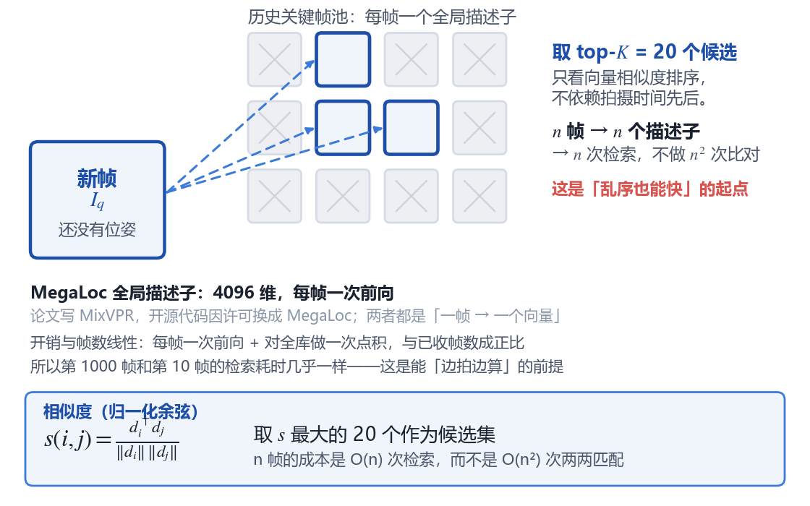
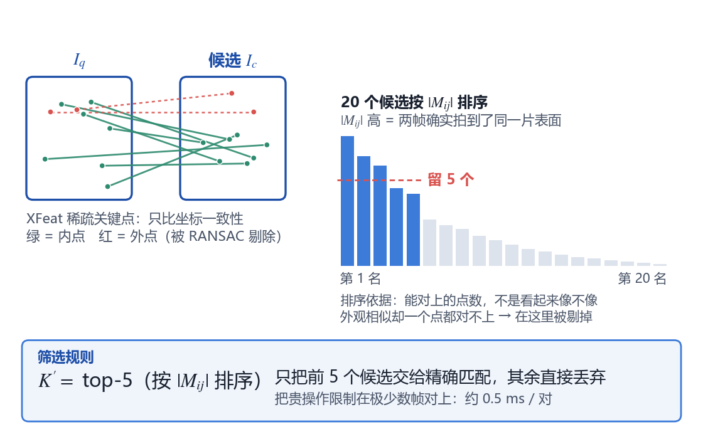
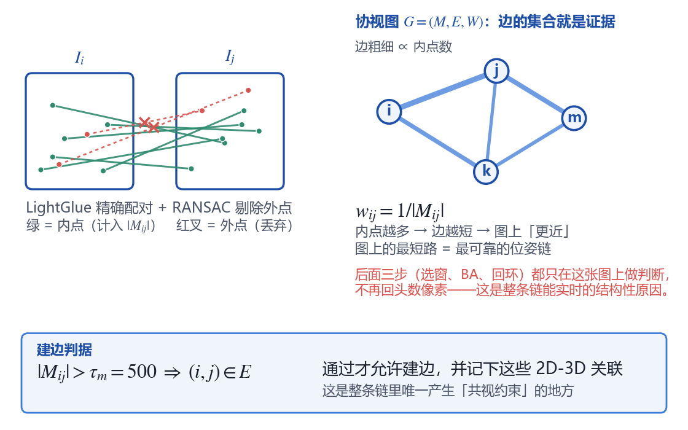
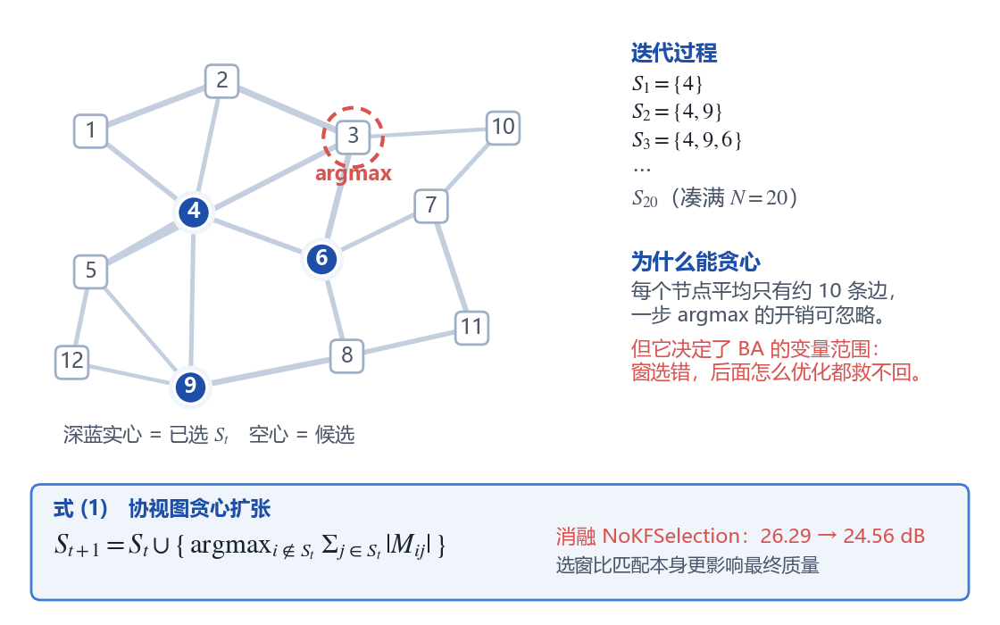
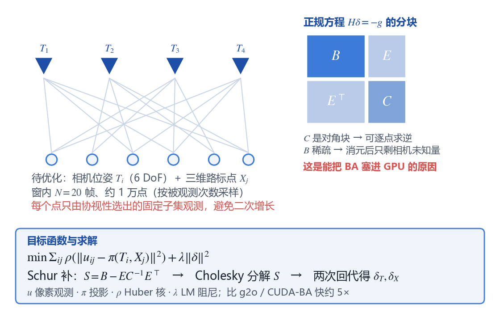
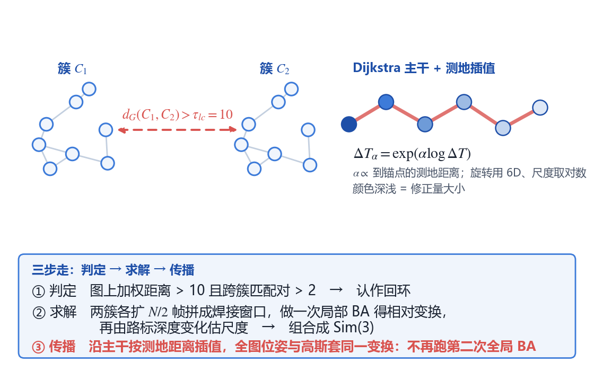
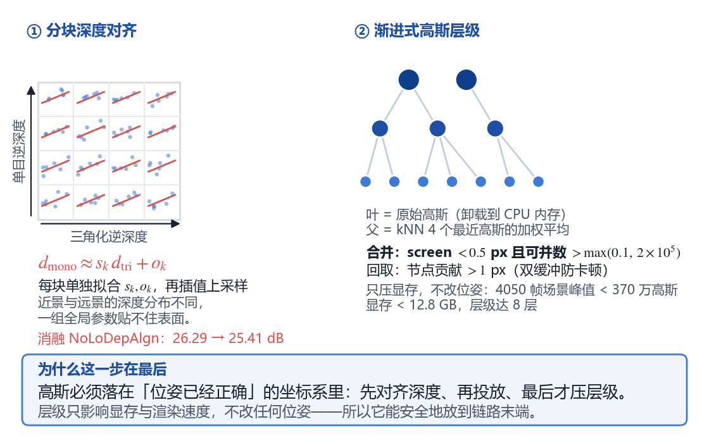
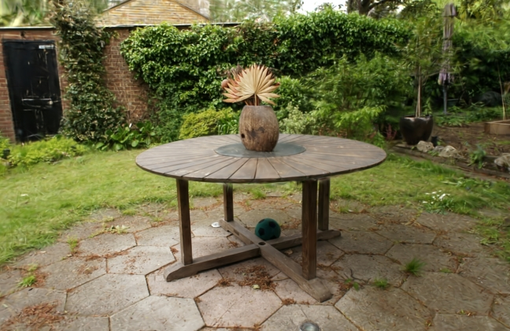
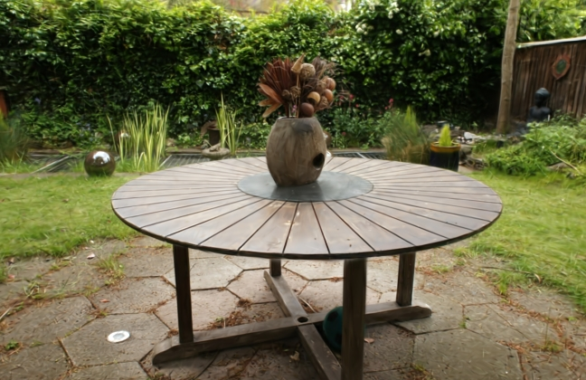
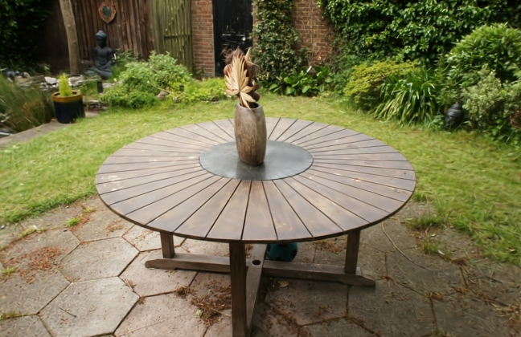

——SIGGRAPH 2026 论文 i3dgs 的复现与分析
摘要：三维高斯泼溅（3D Gaussian Splatting, 3DGS）已成为场景重建与实时新视角合成的代表性技术，但其训练流程高度依赖运动恢复结构（Structure from Motion, SfM）离线提供相机位姿，而 SfM 必须等待全部图像采集完毕才能开始计算，且对"无序采集"（拍摄者来回走动、反复回头补拍）较为敏感。本文分析并复现了 SIGGRAPH 2026 论文《Immediate 3D Gaussian Splat Reconstruction of Unordered Input with Global Consistency》。该工作首次为无序图像输入提供了具备全局一致性的"即时反馈"辐射场重建方案：利用视觉位置识别模型与协视图（covisibility graph）实现两级快速匹配，通过 GPU 定制的局部光束法平差（Bundle Adjustment, BA）与精细化高斯投放实现快速局部重建，提出基于簇（cluster）的回环检测与"图传播"式的免优化漂移修正，并用渐进式高斯层级支撑大场景显存受限下的持续重建。我们在两台服务器上从零搭建了复现环境（先在 NVIDIA RTX 5090 上以 PyTorch 2.7.1 + CUDA 12.8 + sm_120 打通模块链路，后迁移至 4×RTX 4090 + CUDA 12.6 完成端到端重建），累计修复十余处阻塞性工程问题，在 MipNeRF360 的 garden 场景上完成了不依赖 COLMAP 位姿先验的无序重建：PSNR 25.95 dB / SSIM 0.786 / LPIPS 0.206，位姿误差 R° 0.155 / t 1.888，185 帧输入的流式处理墙钟耗时 62.7 s，并导出了漫游视频与测试视角渲染图，最后对其工程实现、性能权衡与局限进行了分析。
关键词：三维高斯泼溅；无序图像采集；即时重建；协同视图；回环闭合；渐进式层级
| 项目 | 内容 |
|---|---|
| 论文名称 | Immediate 3D Gaussian Splat Reconstruction of Unordered Input with Global Consistency |
| 中文译名 | 面向无序输入与全局一致性的即时三维高斯泼溅重建 |
| 发表会议 | ACM SIGGRAPH 2026 Conference Papers（2026 年 7 月 19–23 日，美国洛杉矶） |
| DOI / arXiv | 10.1145/3799902.3811167 / arXiv:2607.14481 |
| 作者 | Andreas Meuleman、Linus Franke（共同一作）、Boris Zhestiankin、Camille Montemagni、George Drettakis |
| 主要通讯单位 | 法国 Inria（Université Côte d'Azur）GRAPHDECO 研究组；合作单位 EPFL、Université de Rennes |
| 论文类型 | 图形（Graphics），兼及视觉（CV） |
| 开源代码 | https://github.com/graphdeco-inria/i3dgs |
GRAPHDECO 是 Inria 与 Université Côte d'Azur 联合组建的图形学与三维视觉研究组，由 George Drettakis 领导。该组正是 3D Gaussian Splatting 原始论文（SIGGRAPH 2023）的作者团队，此后持续在辐射场实时渲染、SLAM 与在线重建方向产出工作（如 3DGS、Scaffold-GS、On-The-Fly NVS、Gaussian Opacity Fields 等）。本文是该团队在"把 3DGS 从离线工具变成可用采集工具"这一主线上的最新推进，其代码库也延续了 3DGS 的工程风格：C++/CUDA 光栅化器负责渲染，Python 训练管线负责调度与优化。
3DGS 用一组带方向的三维高斯椭球显式表达场景，配合可微的泼溅（splat）光栅化实现实时渲染，训练只需图像与对应相机位姿。然而"位姿从哪来"这一前置问题在实践中代价很高：主流做法是用 COLMAP 等 SfM 工具先离线求解相机位姿与稀疏点云。
作者给出的动机非常具体：真实采集几乎总是无序的。用户举着手机绕场景行走，中途转身、回头补拍角落、再从另一侧进入，这种"连续片段 + 乱序回访"的采集方式覆盖更完整，但会让 SfM 的匹配与全局优化变得昂贵；更重要的是，SfM 必须等所有图像都到齐才能开始，用户在拍摄现场无法判断"哪里还没拍到、拍得够不够好"。对于文物数字化、建筑巡检、电商建模这类现场作业，"拍完才知道失败"的代价不可接受。
| 路线 | 代表工作 | 优点 | 缺陷 |
|---|---|---|---|
| 离线 SfM + 3DGS | COLMAP/GLOMAP + 3DGS、Octree-GS、H3DGS | 质量高、全局一致 | 必须等全部图像；分钟到小时级；无法现场反馈 |
| 增量 / 类 SLAM 重建 | Photo-SLAM、MonoGS、On-The-Fly NVS、DROID-Splat、LongSplat | 即时反馈、可交互 | 假设图像有序：新帧只与时间相邻帧匹配，乱序或回访即失效 |
表 1 两条技术路线的对比
两条路线之间存在一个明显的空缺：既有即时性、又能处理无序采集、还能保持全局一致性。作者将挑战归纳为三点：(1) 无序数据中的快速且可靠的图像匹配；(2) 局部重建要在 GPU 上足够快，同时不能让优化规模随关键帧数增长而爆炸；(3) 发现回环后，如何在不重跑全局优化的前提下，把修正量传播到所有位姿以及所有高斯。
为理解本文位置，我们额外阅读了 3DGS 原文（Kerbl et al., SIGGRAPH 2023）、On-The-Fly NVS（Meuleman et al., 2025，本文评测协议与部分基线来源）、Photo-SLAM 与 MonoGS（即时但要求有序）、H3DGS 与 Octree-GS（大场景层级表示），以及视觉位置识别方向的 MixVPR 与 LightGlue。它们构成了本文"匹配—局部优化—全局一致—可扩展"四段式设计的直接背景。
给定一串顺序未知的 RGB 图像（可来自视频抽帧，也可来自杂乱的手机相册），在线地、边接收边输出一个可实时渲染的 3DGS 场景，并在长时间、大范围采集下保持全局一致（不漂移），同时显存占用可控。
(1) 系统主循环与七步链。每来一个新的关键帧 Iq，系统按固定顺序做七件事：① 全局检索 → ② 局部粗筛 → ③ 精验建边 → ④ 贪心选窗 → ⑤ 局部 BA →（若检测到回环）⑥ 回环修正 → ⑦ 高斯落位与层级维护 → 优化高斯（每关键帧固定 30 次迭代）→ 重试此前"搁置"的帧。整条链的设计可以概括为"每帧做小事，偶尔做一次大事"：①–⑤ 与 ⑦ 每个关键帧都要跑，⑥ 只在两簇之间突然出现跨簇匹配时才触发。表 2 是先看全貌的总表，下文按七步逐步展开。
| 步 | 方法 | 核心公式 / 判据 | 在重建中的作用 |
|---|---|---|---|
| ① | MegaLoc 全局描述子 | s(i,j)=di⊤dj/(‖di‖‖dj‖)，取 top-K=20 | 从全部历史帧里找"可能同处"的候选，与帧序无关 |
| ② | XFeat 稀疏局部特征 | K′=top-5 |Mij|（按内点数） | 淘汰"外观像、但没对上点"的候选 |
| ③ | LightGlue + RANSAC | |Mij| > τm=500 才建边；wij=1/|Mij| | 唯一产生共视约束的一步，结果写入协视图 |
| ④ | 协视图贪心扩张（式 1） | St+1=St∪{argmaxi∉St Σj∈St|Mij|}，至 N=20 帧 | 划定 BA 的变量范围：最该一起优化的 20 帧 |
| ⑤ | GPU 局部 BA（LM + Schur） | min Σρ(‖uij−π(Ti,Xj)‖2)；S=B−EC−1E⊤ | 真正解出位姿 Ti 与三维点 Xj——重建本体 |
| ⑥ | 簇级回环 + 图传播 | dG(C1,C2) > 10 触发；ΔTα=exp(α log ΔT) | 焊接窗口得 Sim(3)，沿主干按测地距离摊回全图 |
| ⑦ | 分块深度对齐 + 渐进层级 | dmono≈skdtri+ok；screen < 0.5 px 且可并数达标 → 合并 | 位姿定后才投放高斯；层级只压显存，不改位姿 |
表 2 七步重建链：每步用什么算法、算什么、管什么
(2) 步骤① 全局检索。新帧进入后，先由视觉位置识别模型提取一个全局描述子（论文正文写 MixVPR，开源实现因许可问题替换为 MegaLoc，两者都是"一帧 → 一个 4096 维向量"），与库中全部历史帧的描述子做余弦相似度排序，取前 K=20 个作为候选。这一步只依赖外观、完全不依赖拍摄时间，因此"乱序"在这里第一次被消化掉；其代价与已收帧数成线性关系——n 帧只需 n 次检索，而不是 n(n−1)/2 次两两比对。实测约 1 ms / 1000 对，是全链最便宜的一步。
s(i, j) = di⊤dj / (‖di‖·‖dj‖) ， 候选集 = top-K（K = 20）

图 1 步骤①：全局描述子检索——按余弦相似度从全部历史帧里取前 20 个候选
(3) 步骤② 局部粗筛。对 20 个候选逐个跑一次轻量的局部特征匹配（XFeat），只比较稀疏关键点的坐标一致性，得到内点对数 |Mij|，按大小排序后仅保留前 5 个。这一级故意选择"便宜但粗糙"的特征：它的任务只是排序，不是定论。被淘汰的通常是纯外观检索的典型假阳性——两块墙面的纹理相似、描述子接近，但几何上一个点也对不上。开销约 0.5 ms / 对。
K′ = top-5 { |Mij| } ，只保留前 K′ 个候选进入精确匹配

图 2 步骤②：XFeat 粗筛——按坐标一致性排序，只保留内点最多的前 5 个候选
(4) 步骤③ 精验建边。对留下的 5 个候选跑 LightGlue 精确配对，并用 RANSAC 剔除外点；只有内点数超过 τm=500 的帧对才在图中建立一条边。边权取内点数的倒数 wij=1/|Mij|：内点越多说明几何约束越强、权重越小，于是图上的"最短路"天然对应"最可靠的位姿链"。这是全链中唯一产生共视约束的地方，后续所有位姿都由这些点对推出，边建错则后续全错。开销约 4 ms / 对。
|Mij| > τm = 500 ⇒ (i, j) ∈ E ， wij = 1 / |Mij|

图 3 步骤③：精验建边——内点数超过 500 才建边，边权取内点数的倒数
(5) 步骤④ 贪心选窗。局部 BA 的变量范围由这一步决定：不是"时间上最近的 20 帧"，而是"与当前集合连接最强的帧"。每步把累计内点连接数最大的节点并入集合，直到凑满 N=20。由于每个节点平均只有约 10 条边，一次 argmax 的开销可以忽略。消融实验显示这一步对最终质量影响极大：去掉位置识别、只比相邻 5 帧，PSNR 从 26.29 dB 掉到 24.78 dB；改成"优化最后 20 帧"则为 24.56 dB——选窗比匹配本身更关键。
St+1 = St ∪ { argmaxi∉St Σj∈St |Mij| } （式 1）

图 4 步骤④：贪心选窗——在加权协视图上按式 (1) 扩张，凑满 20 帧
(6) 步骤⑤ GPU 局部 BA。这是整条链中唯一真正求解位姿的步骤。与 SLAM 通常只用 5 帧时间窗不同，本文使用 20 个关键帧并固定约 1 万个路标点（按被观测次数采样），且每个路标只允许被协视性选出的固定子集观测，从而避免观测数随关键帧数二次增长——这是把"SLAM 式局部优化"扩展到"辐射场重建"的关键改动。求解采用 Levenberg–Marquardt 迭代，残差为重投影误差，鲁棒核抑制外点；构造正规方程后做稠密 Schur 消元，把相机与路标解耦，只对相机部分做 Cholesky 分解与两次三角回代。自写核函数使该步骤在 20 帧 / 1 万点的规模下比 g2o、CUDA-BA 等现有优化器快约 5 倍。
min Σi,j ρ( ‖uij − π(Ti, Xj)‖2 ) + λ‖δ‖2 ， S = B − E C−1 E⊤

图 5 步骤⑤：局部 BA——相机—路标二部图与 Schur 补消元
(7) 步骤⑥ 簇级回环与图传播。当一次匹配让两组"各自内部很密、彼此很疏"的关键帧集合之间突然出现跨簇边时，用图上的加权距离 dG(C1,C2) > 10 且跨簇有效匹配对 > 2 判定为回环（论文正文写作"跳数距离 > 5"，这里按开源代码默认值 min_loop_size = 10 的加权图距表述）。随后从两个簇各扩 N/2 帧构成焊接窗口做一次局部 BA，得到锚点帧的相对刚体变换，再由路标深度变化估计尺度，组合成 Sim(3) 修正；最后沿 Dijkstra 求出的"主干路径"按测地距离比例插值分配修正（旋转用 6D 表示插值、尺度取对数插值），并对每个记录了自己"出生关键帧"的高斯套用同一变换。这样回环修正的代价与场景规模近似线性，而不必再做一次全局 BA。
ΔTα = exp( α · log ΔT ) ， α ∝ 到锚点的测地距离

图 6 步骤⑥：簇级回环判定与沿主干路径的修正量传播
(8) 步骤⑦ 深度对齐与渐进层级。位姿确定之后才把新关键帧的三维点投放为高斯。作者不再对整幅图估计一组深度尺度与偏移，而是把图像切成 4×4 块、每块单独拟合线性关系再插值上采样，使高斯落点更贴合真实表面（消融 NoLoDepAlgn：PSNR 26.29 → 25.41 dB）。层级方面：当高斯在当前视角下的屏幕投影尺寸小于 0.5 px 且满足合并数量条件（代码默认"可并数 > max(10%, 20 万)"）时触发合并，用 KNN 取最近的若干个高斯按不透明度与屏幕面积加权平均生成父节点，叶节点参数卸载到 CPU 内存；渲染时若某合并节点的贡献超过 1 px，则异步回取其子节点（双缓冲避免卡顿）。需要说明的是，论文正文将合并描述为"按 KL 散度合并"，而开源代码实现为加权平均，量级与视觉效果接近，此处以代码为准。论文报告：不使用层级时 CityWalk 在 24 GB 卡上处理到第 795/4050 帧即 OOM；使用层级后峰值训练高斯维持在 370 万以下、显存 < 12.8 GB，大场景层级达 8 层。
dmono ≈ sk · dtri + ok（逐块拟合） ； screen < τl 且可并数达标 → kNN 加权平均合并

图 7 步骤⑦：分块深度对齐与按屏幕投影尺寸触发的层级合并
论文在 MipNeRF360、TUM、StaticHikes、Tanks and Temples、Deep Blending 以及自采的大规模场景（SmallCity、Wayve、CityWalk）上评测，指标为 PSNR/SSIM/LPIPS 与位姿误差，结果见表 3。
| 数据集（有序） | 本方法 PSNR / 总时间 | 离线参考（GLOMAP + 3DGS 7k 迭代） | 说明 |
|---|---|---|---|
| TUM | 24.77 dB / 1:22 | 25.29 dB / 3:33 | 比 LongSplat 快约 75 倍 |
| MipNeRF360 | 26.29 dB / 1:17 | 27.52 dB / 8:50 | 快 6.9 倍，质量差 1.23 dB |
| StaticHikes | 22.12 dB / 2:14 | 20.23 dB / 1:02:34 | 质量反超离线方案 |
表 3 有序场景下的质量与耗时对照
无序场景下，MipNeRF360 为 25.60 dB / 1 分 28 秒，相比离线方案约快 6 倍而质量仅略低。大规模场景 CityWalk（4050 帧）上以 29 分 38 秒达到 22.03 dB，显著优于 Octree-GS（17.33 dB / 3 小时 11 分）与 H3DGS（11.78 dB / 22 小时）。位姿精度方面，MipNeRF360 上平移 APE 为 8.5，明显优于 Photo-SLAM、MonoGS、CF-3DGS（161–315 量级）。此外，把输入顺序随机打乱后 PSNR 仅从 26.29 降到 25.73 dB，说明方法对"无序"的鲁棒性是实质性的，而非仅在有序数据上勉强工作。
我们在两台服务器上完成了复现。第一阶段在配备 NVIDIA RTX 5090（32 GB）与 RTX 4090（24 GB）的共享服务器（Ubuntu 22.04 / CUDA 12.8）上搭建环境、逐级打通各个模块；该机器长期被其他任务占满显存（可用的单卡空闲显存低至 1.6–2.5 GB），无法支撑一次完整重建。因此第二阶段把整套代码、预训练权重与数据迁移至另一台配备 4 张 RTX 4090（每张 24 GB）、CUDA 12.6 的服务器，在其上完成端到端重建、质量评估与漫游视频导出。迁移后的复现目标仍为 MipNeRF360 的 garden 场景（185 张无序图像），输入不提供任何 COLMAP 位姿先验。
实际推进分为四步：
| 阶段 | 状态 | 证据与说明 |
|---|---|---|
| ① 环境搭建 | 已完成 | conda 环境 i3dgs（Python 3.12）+ PyTorch 2.7.1；在新机器上以 CUDA 12.6 / sm_89 重新编译 diff_gaussian_rasterization、simple_knn、fused_ssim；cupy-cuda12x 可用；4 张 4090 均被 torch 正确识别 |
| ② 数据与模型链 | 已完成 | MipNeRF360 下载并解压（garden 185 张、counter 240 张、bonsai 292 张）；MegaLoc、XFeat、LightGlue、Depth-Anything-3 权重全部本地化并可离线加载 |
| ③ 端到端重建 | 已完成 | garden 场景整段视频流一次跑通：185 帧输入、156 个关键帧、36.2 万个高斯，总耗时 62.7 s（含初始化 21.6 s 与优化 265.6 s 的累计工作量，端到端墙钟 62.7 s），峰值显存 19.5 GB（2 倍降采样下） |
| ④ 质量评估与可视化 | 已完成 | 按每 8 帧留 1 帧作为测试集，末轮 PSNR 25.95 dB / SSIM 0.786 / LPIPS 0.206；位姿误差 R° 0.155 / t 1.888；已导出 149 帧漫游视频与 24 张测试视角渲染图 |
表 4 复现进度
需要说明的是，这四步并非"照 README 敲命令"即可完成，而是实际修复了十余处阻塞性问题（详见 5.2 节），这构成了本次复现的主要工作量。
garden 场景在 2 倍降采样（648×420）下的重建结果见表 5。作为参照，论文在 A100 上以完整分辨率报告 MipNeRF360 有序场景为 26.29 dB；本次在 RTX 4090 上以半分辨率、并把每 8 帧留 1 帧作为测试集（测试帧不参与高斯优化但参与位姿估计）的设定下取得 25.95 dB，差距主要来自分辨率与测试协议，而非方法本身。
| 指标 | 本机复现（RTX 4090） | 说明 |
|---|---|---|
| PSNR / SSIM / LPIPS | 25.95 dB / 0.786 / 0.206 | 每 8 帧留 1 帧作测试集，末轮结果 |
| 位姿精度（相对 COLMAP） | R° 0.155 / t 1.888 | 旋转误差（度）与平移误差均在亚像素量级 |
| 关键帧数 / 高斯数 | 156 / 362 044 | 185 帧输入中被选为关键帧的数量 |
| 流式处理速度 | 2.95 帧/秒（62.7 s / 185 帧） | 含建图、优化与层级压缩的端到端吞吐 |
| 峰值显存 | 19.5 GB | 2 倍降采样；4 倍降采样时显著更低 |
| 渲染速度 | 约 480 帧/秒 | 层级模型加载后的单视角渲染 |
表 5 garden 场景复现结果
耗时分解也印证了论文的设计：单帧总耗时中，位置识别（VPR）27.8 ms、局部光束法平差（BAL）40.5 ms，而渲染仅 480 帧/秒意味着交互开销可忽略。真正的大头是一次回环检测及其后的全局修正（约 121.6 ms/帧摊销），这部分在绕圈返回起点时才会触发——正是"全局一致性"必须付出的代价，也是该方法区别于纯里程计式方案的核心。
 |
 |
 |
图 8 garden 场景测试视角的重建结果（半分辨率，仅由无序图像流在线重建，未使用 COLMAP 位姿初始化）
代码位于 https://github.com/graphdeco-inria/i3dgs ，采用"Python 训练管线 + CUDA 光栅化扩展"的经典 3DGS 工程结构：
i3dgs/
├── train.py # 主入口：数据流、匹配、BA、高斯优化的调度
├── args.py # 全部超参数（N、K、学习率、各阈值等）
├── dataloaders/ # 图像流读取（无序、可打乱）
├── poses/ # 位姿初始化、匹配、局部 BA
├── scene/ # 高斯模型、相机模型、VPR 封装
├── gaussianviewer.py # 自带交互式查看器（graphdecoviewer，支持 server/client 远程模式）
├── scripts/ # 数据集下载、轨迹渲染、评测脚本
└── submodules/
├── diff-gaussian-rasterization # 可微泼溅光栅化（CUDA，需编译）
├── simple-knn # 高斯邻域查询（CUDA，需编译）
├── xfeat # 轻量局部特征匹配
└── Depth-Anything-V2 # 单目深度先验
其中 diff-gaussian-rasterization 与 simple-knn 必须用 nvcc 现场编译；depth-anything-3 以 pip 依赖形式引入，用于初始化焦距、位姿与路标点。
课程要求说清楚代码的配置与运行情况，这里如实记录我们遇到的问题，这本身也是复现工作的一部分。
TORCH_CUDA_ARCH_LIST 固定为 12.0，避免编译出无法在 5090 上执行的代码。glm/glm.hpp: No such file or directory。原因是 git clone --recursive 只展开第一层子模块，third_party/glm 需要二次初始化。执行 git submodule update --init --recursive 后解决。depth-anything-3 以 git+https://github.com/... 形式声明依赖，服务器到 github.com 的连接间歇性超时，导致 pip 整体失败；同类问题还出现在 LightGlue 权重（raw.githubusercontent）与 torch.hub 拉取 MegaLoc/XFeat 两个仓库时。解决办法是改用 codeload.github.com 下载指定 commit 的 tarball 本地安装，并预先把两个 hub 仓库解压到 ~/.cache/torch/hub/、把权重放进 checkpoints/，使 torch.hub 命中缓存后不再联网。HF_ENDPOINT=https://hf-mirror.com 走镜像后正常。expected scalar type Float but found Half。改为全精度加载并清理旧的 TorchScript 缓存后，位置识别模块可正常前向。Input type (c10::Half) and bias type (float) should be the same。原因在 scene/vpr_model.py 的 forward() 里写死了 img.half()，与改为全精度的骨干网不匹配。改为读取骨干网实际 dtype 再转换（_dt = next(self.model.parameters()).dtype）后彻底解决。poses/ransac.cu、submodules/Depth-Anything-V2，在仓库根目录执行 python i3dgs/train.py 会报 FileNotFoundError: poses/ransac.cu。必须先 cd i3dgs 再运行，数据与输出路径相应改为 ../data、../results。--no-deps 方式安装，因此其 api 模块的传递依赖全部缺失，实测按顺序依次报 omegaconf、moviepy、einops、matplotlib、pycolmap、evo。其中 moviepy 必须锁 1.0.3：DA3 的 export 模块 import moviepy.editor，而 2.x 已删除该模块。SYN-SENT：显存已占 16 GB、GPU 利用率 0%、日志无输出，很难与"正在编译"区分。解决办法是预先把 depth-anything/DA3-BASE（517 MB）下载到 checkpoints/DA3-BASE，运行时显式传入 --da3_model_dir 并设 HF_HUB_OFFLINE=1；DA3 的构造函数会优先尝试 local_files_only=True，命中本地后完全不联网。同理，Depth-Anything-V2 的子模块目录在 GitHub 不通时是空的，改用 codeload 下 tarball 解压，并把 depth_anything_v2_vits.pth（95 MB）预放到代码写死的 i3dgs/models/ 下。TORCH_CUDA_ARCH_LIST="12.0"，编译产物在 4090 上无法执行；反之若在 4090 上一次性编译全部架构，编译时间会长到不可接受。正确做法是让它与所装 PyTorch 的 CUDA 版本一致（本机为 2.7.1+cu126 对应 nvcc 12.6），架构只留 8.9，单个扩展的编译时间由十几分钟降到约 3 分钟。~/.cache/torch/hub/ 下的两个仓库目录同步过来后，程序仍会在运行时联网下载权重：torch.hub.load_state_dict_from_url 取 xfeat.pt、lpips 取 vgg16-397923af.pth、MegaLoc 通过 hf_hub_download 取权重，而这三个文件分别在 hub/checkpoints/ 与 ~/.cache/huggingface/hub/models--gberton--MegaLoc/ 下，不在仓库目录里。在断网环境下表现为 SSL UNEXPECTED_EOF 与 LocalEntryNotFoundError。把这两个缓存目录一并同步后，整个流程真正实现零联网启动。--no-build-isolation；但该选项同时也意味着 pip 不再自动准备构建后端，因此安装以 hatchling 为后端的 depth-anything-3 与 graphdecoviewer 时报 BackendUnavailable: Cannot import 'hatchling.build'。先 pip install hatchling 再装即可。以上十二处问题中，真正需要改动论文代码的只有 3 处，集中在 2 个文件（scene/vpr_model.py 与 poses/lighterglue_matcher.py），均以 [LOCAL PATCH] 注释标注，可直接对照移植；其余均为环境、依赖与资源层面的处理，不涉及算法实现。
最终可用的一键配置命令（以本次最终出结果的 4090 + CUDA 12.6 环境为准；5090 上把 cu126/8.9 换成 cu128/12.0 即可）：
conda create -y -p /datafast/zhengwei-i3dgs/envs/i3dgs python=3.12 export CUDA_HOME=/usr/local/cuda # 12.6 export TORCH_CUDA_ARCH_LIST="8.9" # sm_89（RTX 4090） export HF_ENDPOINT=https://hf-mirror.com export HF_HUB_OFFLINE=1 pip install torch==2.7.1 torchvision==0.22.1 pip install hatchling # --no-build-isolation 下需自备构建后端 cd i3dgs && pip install -r requirements.txt --no-build-isolation pip install cupy-cuda12x pip install omegaconf einops moviepy==1.0.3 matplotlib pycolmap evo trimesh imageio e3nn plyfile glfw websockets imgui-bundle
需要联网的三处依赖（depth-anything-3、fused-ssim、graphdecoviewer）在 GitHub 不通时用 codeload.github.com 下 tarball 后本地安装，命令形如：
curl -sL -o da3.tgz https://codeload.github.com/ByteDance-Seed/Depth-Anything-3/tar.gz/40674546e40144452ec93035ac77d762f4b5d16f tar xzf da3.tgz && pip install --no-deps --no-build-isolation ./Depth-Anything-3-40674546*/
官方提供三种运行方式，均已写入我们提交的演示脚本。以下命令以迁移后的机器（172.88.88.14）为例，项目根目录为 /home/hjadmin/zhengwei/i3dgs-demo：
cd i3dgs && CUDA_VISIBLE_DEVICES=2 python train.py -s ../data/MipNeRF360/garden -m ../results/garden_ds2 --downsampling 2 --da3_model_dir ../weights/DA3-BASE。首次运行要做 JIT 编译，启动较慢。--test_hold 8 --test_frequency 20 --eval_poses，即每 8 帧留 1 帧作测试集、每 20 个关键帧评估一次，并把位姿与 COLMAP 真值对比；结果写入 metadata.json 与 test_images/。python scripts/render_path.py -m ../results/garden_ds2 --render_path ../results/garden_ds2/sparse/0 --out_dir ../results/garden_ds2/video，沿优化出的相机轨迹导出逐帧图像与视频。python gaussianviewer.py server ../results/garden_ds2 在服务器渲染，本地运行 gaussianviewer.py client --ip 172.88.88.14 连接即可漫游——客户端不需要 GPU，适合课程现场演示。关于方法设计的取舍。这篇论文最打动我的不是某个模块的技巧性，而是它对"代价"的清醒分配：作者把系统拆成"每帧都要做的小事"（匹配、局部 BA、30 次高斯迭代）与"偶尔做一次的大事"（回环修正、层级合并），并保证后者不需要重跑全局优化。回环一节尤其精彩——用 Dijkstra 在协视图上找"最可信的位姿链"，再按测地距离把 Sim(3) 修正量插值传播出去，本质上是用图上的距离替代全局优化的解，在工程上非常有借鉴价值。
优势。(1) 解决的是实际采集流程中的真痛点，而不是在已有基准上刷指标；(2) 无序打乱后质量仅掉 0.5 dB，鲁棒性扎实；(3) 速度优势是数量级的（分钟 vs 小时），质量只比离线方案低 1–2 dB，这一性价比对现场应用具有决定性；(4) 代码开源、自带查看器，工程完成度高。
劣势与局限。(1) 纯旋转或低视差序列无法三角化，这是 SfM/SLAM 系方法的共病，作者亦有说明；(2) 基于图传播的修正虽快，但精度不及真正的全局 BA，几何精度与 GLOMAP 仍有差距；(3) 系统依赖位置识别、局部匹配、单目深度等一串上游模型，任一环节在弱纹理、强反光、夜间等场景退化都会传导到最终结果；(4) 层级合并的阈值（0.5 px、1 px、20%）属经验值，跨数据集时可能需要重调。
对领域前景的看法。这类工作的价值在于把 3DGS 从"事后重建"推向"采集时的助手"。可以预见，下一步的竞争点会从"重建质量"转向"采集体验"——例如实时提示"这里还没覆盖""该视角重投影误差偏大"，甚至主动规划拍摄路径。这与主动重建、机器人在线建图等方向是收敛的。
关于复现本身的体会。本次复现最大的收获不是跑通脚本，而是理解了 3DGS 生态的"隐性依赖"：CUDA 架构、子模块层级、模型权重来源，任何一环不通都会让"照 README 敲命令"直接失败。也正因为如此，课程要求中"代码分析和运行情况"这一节非常必要——它检验的是能否把一个研究工作真正落地，而不只是读懂论文。
[1] Meuleman A, Franke L, Zhestiankin B, Montemagni C, Drettakis G. Immediate 3D Gaussian Splat Reconstruction of Unordered Input with Global Consistency[C]. ACM SIGGRAPH 2026 Conference Papers, 2026. DOI: 10.1145/3799902.3811167.
[2] Kerbl B, Kopanas G, Leimkühler T, Drettakis G. 3D Gaussian Splatting for Real-Time Radiance Field Rendering[J]. ACM Transactions on Graphics, 2023, 42(4): 139.
[3] Meuleman A, et al. On-The-Fly Novel View Synthesis[C]. 2025.
[4] Matsuki H, Murai R, Kelly J, Davison A J. Gaussian Splatting SLAM[C]. CVPR, 2024.
[5] Huang H, Li L, Cheng H, Yeung S K. Photo-SLAM: Real-time Photorealistic SLAM with Efficient 3D Gaussian Splatting[J]. 2024.
[6] Ali M, et al. MixVPR: Feature Mixing for Visual Place Recognition[C]. WACV, 2023.
[7] Potje G, Cadar F, Avallone G, et al. XFeat: Accelerated Features for Lightweight Image Matching[C]. CVPR, 2024.
[8] Lindenberger P, Sarlin P E, Pollefeys M. LightGlue: Local Feature Matching at Light Speed[C]. ICCV, 2023.
[9] Kerbl B, Meuleman A, Kopanas G, Drettakis G. A Hierarchical 3D Gaussian Representation for Real-Time Rendering of Very Large Datasets[J]. ACM Transactions on Graphics, 2024.
[10] Ren K, et al. Octree-GS: Towards Consistent Real-time Rendering with LOD-Structured 3D Gaussians[J]. 2024.